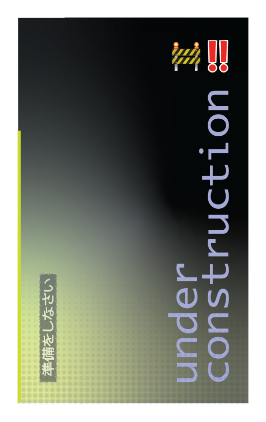
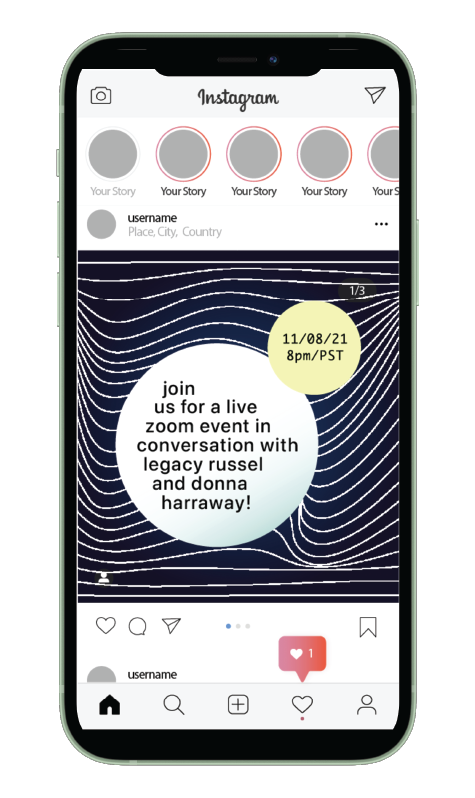

some of my graphic design work...



good design entails discipline, refining technical materials, and finding new ways to assemble them to communicate an idea or sensation.
clarifying direction, naming necessary elements, arrangement, prototyping, and perfecting.
i use surveys and a rubric to measure quality so that the finalized product upholds a high standard.
i've generated an archive of reusable objects...
some of my graphic design work...
working with written word...
when i write, i try to keep the objective in mind and communicate in a manner that is clear, and to-the-point.
being sensible to word choice and associations allows me to tap into subtle nuances that can help convey what i'm trying to get across.
letter styling can completely transform the message of a text—i think it's important to use styles that work within the given context.
documents should be accessible, engaging, and beautiful. no matter the medium, they should uphold a high standard of quality.
i have experience with different parts of the sound design process, from composition, mixing, to mastering.
through my musical practice, i've focused on experimentation, an attention to instrument design, and recording strategies—i try to construct each sound as an immersive space and sensation.
click the audio play to hear a sound from my vault:
what inspires me...
i look for patterns in nature and try to implement these elements to create harmony in my own work.
creating dialogue with the practices and work of others is a big part of my own practice.